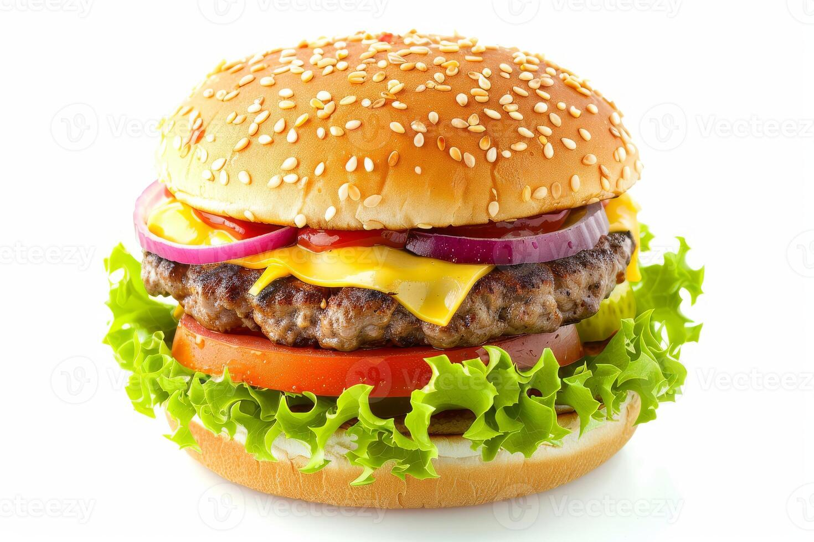

A burger recepi

Description
A burger is a very delicious dish
Ingredients
- Ground beef (about 1 lb / 450 g)
- Salt and pepper (to taste)
- Olive oil or butter (for cooking)
- Cheese slices (optional, e.g., cheddar)
- Burger buns
- Lettuce leaves
- Tomato slices
- Onion slices
- Pickles (optional)
- Ketchup, mustard, or mayonnaise
Instructions
- Shape the ground beef into patties, about the size of your burger buns. Season both sides with salt and pepper.
- Heat olive oil or butter in a skillet or grill pan over medium-high heat.
- Cook the patties for 3–4 minutes per side, or until they reach your desired doneness.
- If using cheese, place a slice on each patty during the last minute of cooking and cover to melt.
- Toast the burger buns lightly in the pan or oven.
- Assemble the burger: place lettuce on the bottom bun, followed by the patty, tomato, onion, and pickles.
- Add condiments like ketchup, mustard, or mayonnaise.
- Top with the other half of the bun and serve immediately.
Home